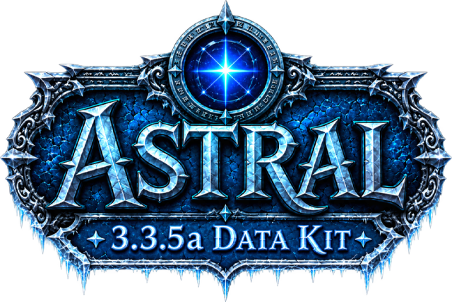
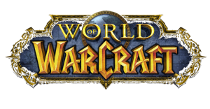
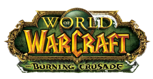
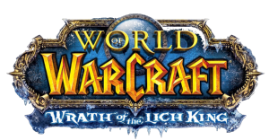

Astral is a conceptualization tool for Wrath of the Lich King content.
Design something before it exists in the game. Items, spells, a boss, an achievement, lines of dialogue. Put it all together and receive a wiki style export in PNG format. Everything you create is shown as it would be in-game, utilizing icons, fonts, and border art from your 3.3.5a client. Connect your AzerothCore or TrinityCore database and it will read items, creatures and loot tables, so a custom piece can be built from it.
Visualize your creativity and see how it would appear in-game.
Want to report a bug? Suggest a feature? Visit the GitHub. https://github.com/Voxstrasza/Astral-Data-Kit
Open Settings and point at your 3.3.5a folder - the one containing Data\. Indexing takes a moment the first time and is cached afterwards. That one step turns on the real icons, the real fonts, the client's spell and achievement tables, and the dungeon browser.
Data\
Connecting a world database in the same dialog is optional and adds the finders: creature search, item search, a boss's real drop list, and the health and mana pools behind the dungeon browser. Everything else works without it.
Item - create an item tooltip, or pull existing data from the database and load it, matching the in-game engine.
Spell - create a spell tooltip, or pull existing data from Spell.dbc and load it, matching the in-game engine.
Spell.dbc
NPC - in-game target frame with health pools. Create a creature or pull a dungeon/raid creature from the database. Customize the scaling and pull portraits from the 3D model, matching the in-game engine.
Achievement - create an achievement or load an existing one as it would appear in-game.
Texts - want to formulate some roleplay? Draft some text as it would appear in-game, complete with boss whispers and boss announcements.
Raid Wizard - where everything you build with the previous tools can go. Exports an image where on one sheet you can view target frames, spells, texts and more.
Armory [WIP] - build a character and read the stat block it would really have. Pick a race, class and level, fill the nineteen slots from the database or from gear you invented, and the sheet totals live. Talents come from a calculator per class, racials are applied and listed, and set bonuses light up at the piece counts they need.
Small exports can be copied to the clipboard, bigger ones can be downloaded. Exports are PNG format at 1x-4x. A spell carrying an aura saves two files rather than one, since they are two tooltips in the game.
Export scale is the size of the file: 1x is what the game draws, 4x is the same picture at four times the pixels. Max width is where a tooltip wraps, so it changes the shape of the export as well as the preview. Transparent background drops the backing, an item can keep or lose its quality-colored border, and an item or spell icon can sit outside the frame, inside it at the top-left, or not at all.
Preview zoom and the checkerboard change only what you are looking at - neither reaches the file. Every option here is remembered per window, so a transparent target frame does not quietly change how your items export.
Checking this box marks the achievement as earned, saturating the achievement. Unchecking marks the achievement as unearned, desaturating the achievement panel.
Criteria to be fulfilled in order to earn the achievement.
Create a raid, use an icon, and fill it with creatures, loot, achievements and roleplay. Utilizing the Item, Spell, NPC, Achievement and Texts windows you can conceptualize a boss encounter or an entire raid and export it as a wiki style image.
Click a slot to add an item. Right click to remove.
Write some dialog as it would appear in-game.
DPS is calculated for you.
Show accompanying buff or debuff aura.
Boss classification shows a skull in place of the level, as in game.
Portraits are rendered live by using the .m2 file's built in camera.
Each press is multiplicative.
Scales the mana pool on its own; the health buttons leave it alone.
Connect your world database in Settings to search items by name or entry id.
Keep what this window is showing, and draw everything kept here as one sheet - a tier set or a boss's drop table as a single picture rather than eight.
Tick the secondaries you want and the whole secondary share is split between them. Leave them all clear to use the spread real gear of that role averages.
Generate spends the item level's whole budget in the proportions real gear of that role uses. Price reads what is in the editor and says what item level it really is - the slot and sockets come from the fields below, because sockets are paid for out of the same budget.
Reads the client's Spell.dbc - no database needed. Picking one fills in the name, rank, cost, range, cast time, cooldown, icon and description.
Keep what this window is showing, and draw the saved ones as one sheet - or tick a few and build a sheet mixing them with items and target frames.
Connect your world database in Settings to search creatures by name or entry id.
Keep this frame, portrait and all, and draw the saved ones as one sheet.
Reads the client's Achievement.dbc - no database needed. Picking one fills in the title, description, reward, points, icon and criteria. Statistics are left out, as they are in the game's own achievement list.
Keep what this window is showing, and draw everything kept here as one sheet.
In-game icons are 64×64. Anything else still works - the game scales icons - but 64×64 is what the client ships and what stays sharp. A TGA is converted to PNG as it is saved; no browser can read one, so its size is not checked here the way a PNG's is.
Icons and fonts are drawn from the 3.3.5a client.
Enables NPC and Item search.
Click to spend a point, right click to take one back.



Pick an expansion, then a dungeon or raid.